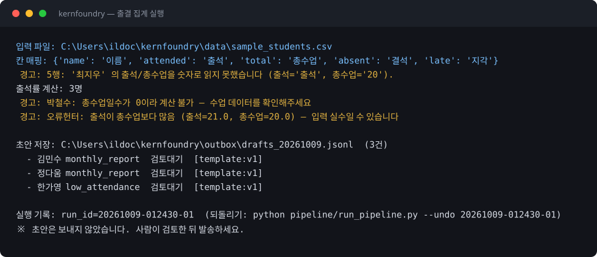
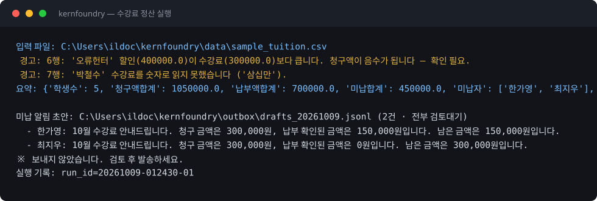
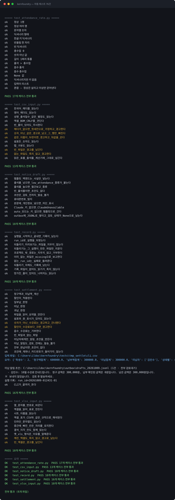

예시 자료로 실행한 실제 출력과 코드 예시.
예시 자료로 실행한 출력입니다. 실제 고객 정보는 사용하지 않습니다.
학생 3명 계산, 이상값 3건을 경고로 분리, 안내문 초안 3건이 검토 대기 상태로 생성됩니다.

청구액 1,050,000원 / 납부 700,000원 / 미납 450,000원, 미납자 2명에게 보낼 초안이 생성됩니다.

빈 입력, 숫자 아닌 값, 발송 차단, 개인정보 차단, 되돌리기 범위 등 6개 파일 76개 항목을 매번 돌립니다.

설치할 패키지가 없습니다. 파이썬 표준 라이브러리만 사용합니다.
소스 공개 — github.com/kernfoundry